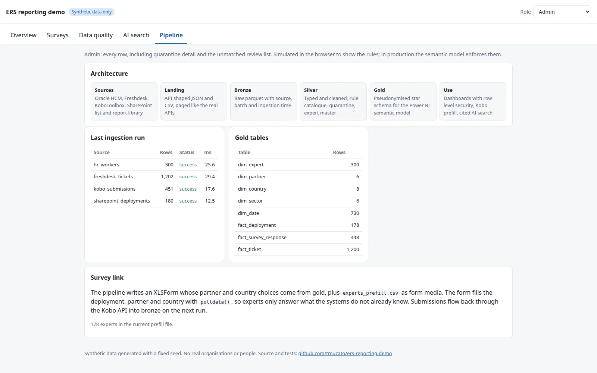
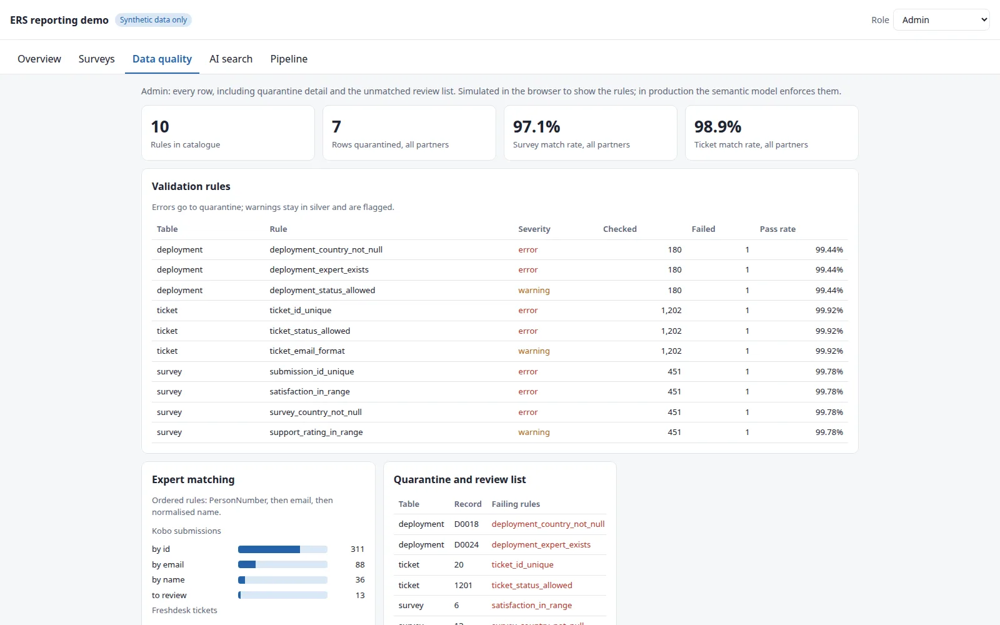

All work
Data platform · synthetic data
ERS Reporting Demo
A prototype reporting platform showing how survey, helpdesk and HR data flow through a medallion pipeline into role secured dashboards, data quality checks and cited AI search.

Summary
The demo models an expert deployment programme whose facts live in four systems: Oracle HCM for people, Freshdesk for helpdesk tickets, KoboToolbox for surveys and a SharePoint list and report library for deployments. The pipeline lands each source in API shaped pages, standardises it, validates it and publishes a pseudonymised star schema that a Power BI semantic model can sit on.
Everything runs on synthetic data generated with a fixed seed, so no real organisations or people are involved, and the run is reproducible end to end.
Architecture
- SourcesOracle HCM, Freshdesk, KoboToolbox, SharePoint
- LandingAPI shaped JSON and CSV, paged like the real APIs
- BronzeRaw parquet with source, batch and ingestion time
- SilverTyped and cleaned, rule catalogue, quarantine, expert master
- GoldPseudonymised star schema for the semantic model
- UseRow level security dashboards, Kobo prefill, cited AI search

What it demonstrates
- Data quality as a first class layer. A catalogue of ten validation rules runs on every load. Errors send rows to quarantine, warnings stay in silver with a flag, and pass rates are reported per rule.
- Identity resolution across systems. Experts are matched in a fixed order (PersonNumber, then email, then normalised name), reaching 97.1% on survey submissions and 98.9% on tickets, with the remainder routed to a review list.
- Closing the survey loop. The pipeline generates an XLSForm whose choices come from gold, plus an
experts_prefill.csvmedia file.pulldata()fills deployment, partner and country, so experts only answer what the systems do not already know. - Role based views. Admin, MEL analyst, partner manager and expert roles see different slices of the same data, simulating the row level security the semantic model enforces in production.
- Grounded AI search. An "ask the expert reports" prototype answers questions with citations back to the source reports.
